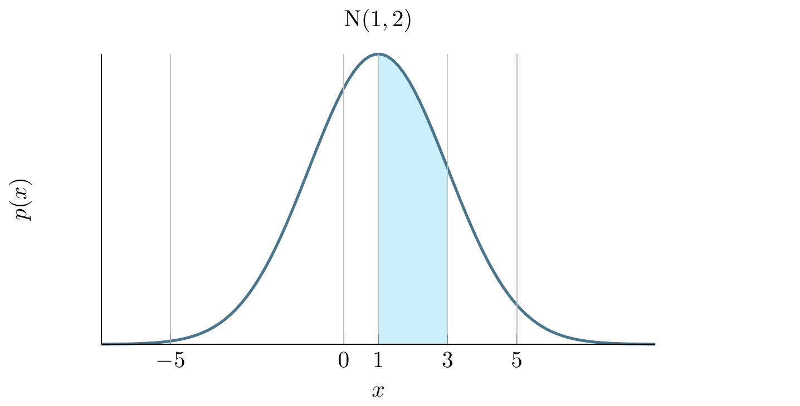
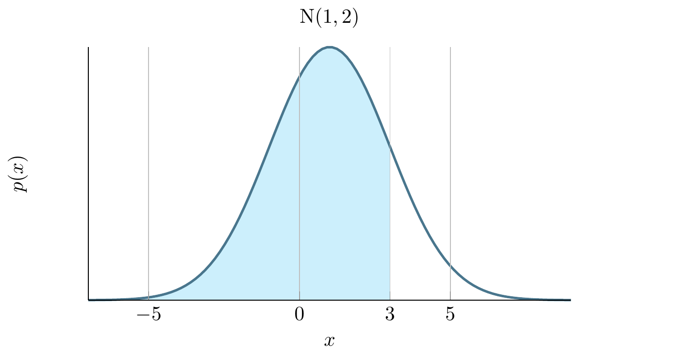
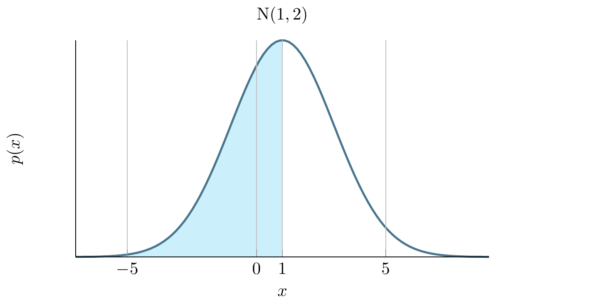
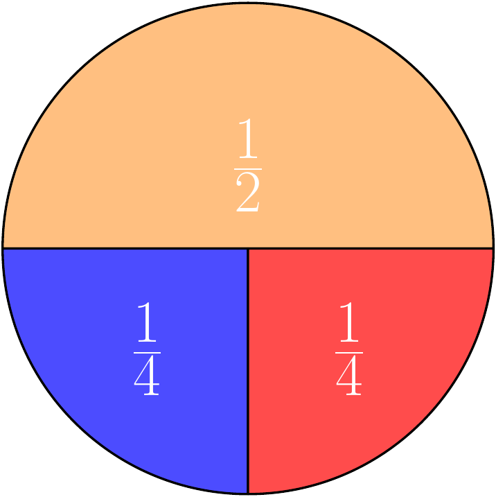

7 Monte Carlo Methods
Monte Carlo (MC) simulations provide a means to model a problem and apply brute force computational power to achieve a solution - randomly simulate from a model until you get an answer. The best way to explain is to just run through a bunch of examples, so lets go!
7.1 Integration
We will start with basic integration. Suppose we have an instance of a Normal distribution with a mean of 1 and a standard deviation of 2 then we want to find the integral (area under the curve) from 1 to 3:
\[ \int_1^3 \frac{1}{10 \sqrt{2\,\pi}}\, e^{- \frac{(x - 1)^2}{2\times 2^2}}dx \]
which we can visualise as follows:

If you have not done calculus before - do not worry. We are going to write a Monte Carlo approach for estimating this integral which does not require any knowledge of calculus!
The method relies on being able to generate samples from this distribution and counting how many values fall between 1 and 3. The proportion of samples that fall in this range over the total number of samples gives the area.
First, create a new R script in Rstudio. Next we define the number of samples we will obtain. Lets choose 10,000
n <- 100 # number of samples to takeNow we use the R function rnorm to simulate 100 numbers from a Normal distribution with mean 1 and standard deviation 2:
sims <- rnorm(n, mean = 1, sd = 2) # simulated normally distributed numbersLets estimate the integral between 1 and 3 by counting how many samples had a value in this range:
# find proportion of values between 1-3
mc_integral <- sum(sims >= 1 & sims <= 3) / nThe result we get is:
print(mc_integral)## [1] 0.36The exact answer given using the cumulative distribution function pnorm in R is given by:
mc_exact = pnorm(q=3, mean=1, sd=2) - pnorm(q=1, mean=1, sd=2)
print(mc_exact)## [1] 0.3413447The pnorm gives the integral under the Normal distribution (in this case with mean 1 and standard deviation 2) from negative infinity up to the value specified by q.
The first call to pnorm(q=3, mean=1, sd=2) gives us this integral:

The second call to pnorm(q=1, mean=1, sd=2) gives us this integral:

Therefore the difference between these gives us the integral of interest.
The Monte Carlo estimate is a fairly good approximation to the true value!
7.2 Problem: MC accuracy
- Try increasing the number of simulations and see how the accuracy improves?
- Can you draw a graph of number of MC samples vs accuracy?
Model answers are in the next section
7.3 Approximating the Binomial Distribution
We flip a coin 10 times and we want to know the probability of getting more than 3 heads. This is a trivial problem using the Binomial distribution but suppose we have forgotten about this or never learned it in the first place.
Lets solve this problem with a Monte Carlo simulation. We will use the common trick of representing tails with 0 and heads with 1, then simulate 10 coin tosses 100 times and see how often that happens.
runs <- 100 # number of simulations to run
greater_than_three <- rep(0, runs) # vector to hold outcomes
# run 100 simulations
for (i in 1:runs) {
# flip a coin ten times (0 - tail, 1 - head)
coin_flips <- sample(c(0, 1), 10, replace = T)
# count how many heads and check if greater than 3
greater_than_three[i] <- (sum(coin_flips) > 3)
}
# compute average over simulations
pr_greater_than_three <- sum(greater_than_three) / runsFor our MC estimate of the probability \(P(X>3)\) we get
print(pr_greater_than_three)## [1] 0.77which we can compare to R’s built-in Binomial distribution function:
print(pbinom(3, 10, 0.5, lower.tail = FALSE))## [1] 0.8281257.4 Problem: MC Binomial
- Try increasing the number of simulations and see how the accuracy improves?
- Can you plot how the accuracy varies as a function of the number of simulations? (hint: see the previous section)
Not bad! The Monte Carlo estimate is close to the true value.
7.5 Monte Carlo Expectations
Consider the following spinner. If the spinner is spun randomly then it has a probability 0.5 of landing on yellow and 0.25 of landing on red or blue respectively.

If the rules of the game are such that landing on ‘yellow’ you gain 1 point, ‘red’ you lose 1 point and ‘blue’ you gain 2 points. We can easily calculate the expected score.
Let \(X\) denote the random variable associated with the score of the spin then:
\[ E[X] = \frac{1}{2} \times 1 + \frac{1}{4} \times (-1) + \frac{1}{4} \times 2 = 0.75 \]
If we ask a more challenging question such as:
After 20 spins what is the probability that you will have less then 0 points?“
How might we solve this?
Of course, there are methods to analytically solve this type of problem but by the time they are even explained we could have already written our simulation!
To solve this with a Monte Carlo simulation you need to sample from the Spinner 20 times, and return 1 if we are below 0 other wise we’ll return 0. We will repeat this 10,000 times to see how often it happens!
7.6 Using Functions
First, we are going to introduce the concept of a function. This is a piece of code which is encapsulated so then we can refer to it repeated via the name of the function rather than repeatedly writing those lines of code. The function we will write will simulate one game as indicated above and return whether the number of points is less than zero.
# simulates a game of 20 spins
play_game <- function(){
# picks a number from the list (1, -1, 2)
# with probability 50%, 25% and 25% twenty times
results <- sample(c(1, -1, 2), 20, replace = TRUE, prob = c(0.5, 0.25, 0.25))
# function returns whether the sum of all the spins is < 1
return(sum(results) < 0)
}7.7 Simulating from function
Now we can use this function in a loop to play the game 100 times:
runs <- 100 # play the game 100 times
less_than_zero <- rep(0, runs) # vector to store outcome of each game
for (it in 1:runs) {
# play the game by calling the function and store the outcome
less_than_zero[it] <- play_game()
}We can then compute the probability that, after twenty spins, we will have less than zero points:
prob_less_than_zero <- sum(less_than_zero)/runs
print(prob_less_than_zero)## [1] 0The probability is very low. This is not surprising since there is only a 25% chance of getting a point deduction on any spin and a 75% chance of gaining points. Try to increase the number of simulation runs to see if you can detect any games where you do find a negative score.
7.8 Problem: MC Expectation
- Modify your code to allow you to calculate the expected number of points after 20 spins.
- Simulate a game in which you have a maximum of 20 spins but you go “bust” once you hit a negative score and take this into account when you compute the expected end of game score.